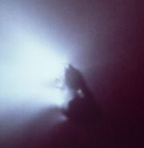

Halley 1986
Výzkum komety Halley sondami při svém 30. návratu
{kind=link}
Halleyova kometa byla při svém 30. návratu ke Slunci poprvé zachycena 16. října 1982 jako nepatrná hvězdička 25. magnitudy. Kometa se tehdy nacházela 1,6 miliardy kilometrů od Slunce. Tímto okamžikem začalo koordinované sledování Halleyovy komety, do něhož se zapojilo asi 2000 astronomů amatérů i profesionálů. To bylo potřebné pro přesné určení dráhy a pro budoucí navádění kosmických sond. Halleyovu kometu v roce 1986 zkoumaly sondy Vega, Giotto, Sakigake, Suisei a ICE a všechny byly úspěšné.
Giotto
Klanění tří králů v Padovské kapli
{kind=link}
Tato sonda byla pojmenována po italském malíři Giottovi di Bondone, který nakreslil Halleyovu kometu na fresce Klanění tří králů v Padovské kapli.
Ze všech pěti sond se přiblížila západoevropská sonda Giotto k Halleyově kometě nejblíže. Bylo to pouhých 600 kilometrů od jádra. Toho se podařilo dosáhnout díky mezinárodní spolupráci a koordinaci a proto, že tato sonda kolem Halleyovy komety prolétala jako poslední ze všech sond. Získala zajímavé fotografie jádra komety. O této sondě by se dalo říct, že byla ze všech sond nejúspěšnější.

Jádro komety Halley
(sonda Gitto)
{kind=link}
Sonda Giotto, přes částečné poškození při setkání s Halleyovou kometou rychlostí 68 km·s−1, pokračovala ke kometě 26P/Grigg-Skjellerup s oběžnou dobou 5,1 roku s níž se setkala 10. července 1992, při průletu pouhých 125 km od jádra. Bylo to poměrně nízkou rychlostí (14 km·s−1), takže průzkum probíhal hladce.
Vega 1 a Vega 2
Tehdejší sovětský svaz připravil sondy Vega 1 a 2. Tyto sondy okolo jádra Halleyovy komety prolétly 8000 a 9000 km od jádra.
Tyto sondy před setkáním s Halleyovu kometou, zkomaly planetu Venuši.
Sakigake a Susei
Tyto sondy pocházejí z Japonska. Suisei proťala chvost Halleyovy komety ve vzdálenosti 150 000 km od jádra a sonda Sakigake celých 7 milionů km od jádra.
Po průletu kolem Halleyovy komety byla sonda Sakigake přesměrována k sondě 45P/Honda-Mrkos-Pajdušáková. K ní dospěla 3. února 1996 ve vzdálenosti 25 milionů kilometrů. Nejblíže k jádru byla 10 000 km a zjistila, že je jádro pouze 700 m velké a má tvar šišky o poloměru poloos asi 3:1.
ICE
Tato americká sonda původně zkoumala interakci plazmatu v okolí země se Slunečním větrem. Byla přesměrována a přejmenována na ICE (International Cometary Explorer). ICE kolem Halleyovy komety proletěla v uctivé vzdálenosti pětatřiceti milionů kilometrů. Tato sonda neměla kameru.
Historicky první průlet kolem komety se uskutečnil v září 1985, když sonda ICE navštívila kometu 21P/Giacobinni-Zinner cestou k Halleyově kometě.